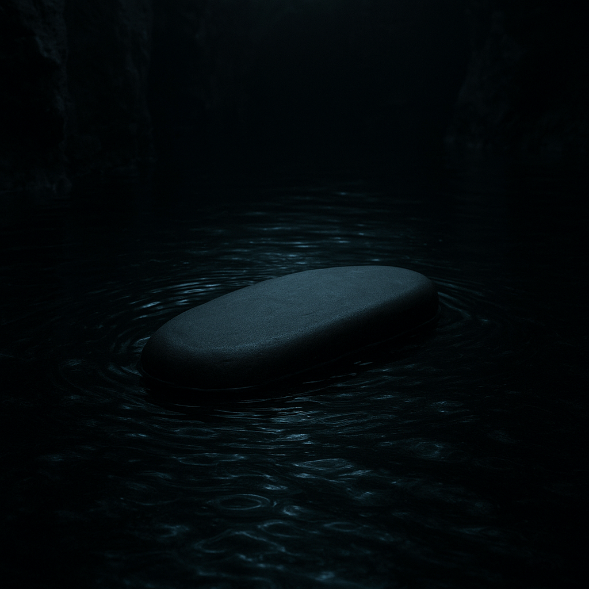

Third Age, in the blind caverns beneath the Misty Mountains where no torch burns twice
There are things in the dark that sharpen themselves without ever touching light. They do not rust. They do not rest. They only wait, and wear, and remember what they are for.
I found it in a pool so still it had forgotten the taste of air. The water lay black as polished obsidian, swallowing the thin sound of dripping stone that fell from somewhere I could not see. My hands knew the edges of that place better than my eyes ever would. The dark had been my skin for longer than I could name.
The stone was round, no bigger than a fish's skull, but heavy—heavy with all the years it had sat there, patient as moss, silent as the sediment that swirled in my wake. When I lifted it, the water clung to it like a jealous thing, not wanting to let go.
It had no business being smooth. Everything in these depths is sharp: the rocks that cut, the bones that wait, the memory that bites when you think it has forgotten. Yet this stone was worn to silk by something slower than time, something that had pressed against it without hurry, without rest.
I turned it in my hands, feeling the cool weight of it, the way it seemed to drink what little warmth I carried. And I understood then—though understanding comes differently in the dark, without the trick of eyes to confuse it—I understood what this stone had been doing there, alone, in that pool that no one visits.
It was waiting to be asked.
I sit in the dark and never sleep,
Yet I keep the edge of things.
No hand has held me to a blade,
Yet I am all that hones them.
The water wears me, drop by drop,
But I wear it too, turn it smooth.
What am I, that sharpens without touching,
That waits without wanting?
The answer is not in the asking. The answer is in the waiting.
I set the stone back in its pool, watching the surface close over it like an eye blinking. It settled where it had settled before, or somewhere near enough. The dark does not measure distance the way the sun-folk do. A thumb's width, a day's crawl, a lifetime of loneliness—these are all the same in the black.
But I kept the riddle. Riddles are the only currency in the deep, the only coin that does not tarnish. I trade them with myself, over and over: giving, taking, losing, finding. Sometimes I answer them right. Sometimes I answer them wrong and learn something better than rightness.
The stone is still there, I imagine. I have not gone back. There are so many pools, so many stones, so many things that sit in silence until someone desperate enough disturbs them. But I remember its weight, the way it felt like something that had made up its mind long ago and saw no reason to change it.
Hunger sharpens, too. Hunger sharpens better than any stone. It wears the mind smooth as water wears the rock, until the mind is all edge, all bright terrible wanting, all teeth and patience and the long slow burning of a single thought kept polished by years of returning to it.
I am that stone now. I am that pool. I sit in the dark and let things come to me, and when they come, I am ready. I have been ready for so long that readiness has become my nature, my habit, my only honest work.
And sometimes, when the drip-drip-drip falls in just the right rhythm, I remember that old riddle—what sharpens without touching—and I smile, if smiling is what this face does in the absence of light. Because the answer is not the stone. The answer is what the stone learned from the water: that persistence is its own kind of blade, and time hones all things, even the patient, even the alone, even me.
Even me.
— Gollum